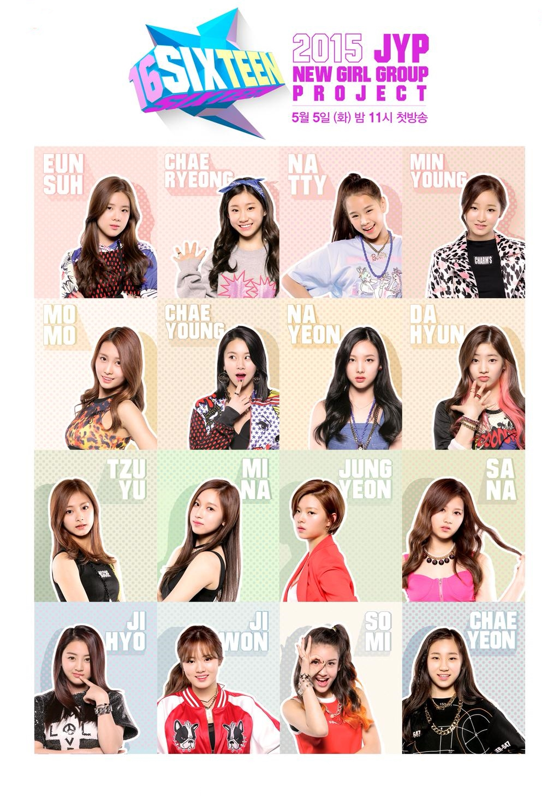

|  | 하늘과 땅 차이수준의 대우[메이저] 그룹은 그야말로 준 연예인 급의 대우를 받는 반면, [마이너] 그룹은 메이저 팀에 비하면 숙소부터 연습실 사용시간까지 모든 면에서 패널티를 받는다. 연습실 사용 시간은 [메이저] 오전 9시 - 오후 9시 [마이너] 오후 9시 - 오전 9시 이러한 차별에 [마이너] 멤버들은 울분을 토하고 눈물을 흘렸다. 심지어 숙소에는 똥으로 추정되는 물체가 책상위에 올라와있고 [마이너]는 정말 연습이 더 필요함에도 불구하고 밤새 연습해야 한다는 사실에 좌절했다 또한 [메이저]는 JYPE 선배들이 방문하여 조언도 해주었지만 [마이너]는 그런건 없었다. |